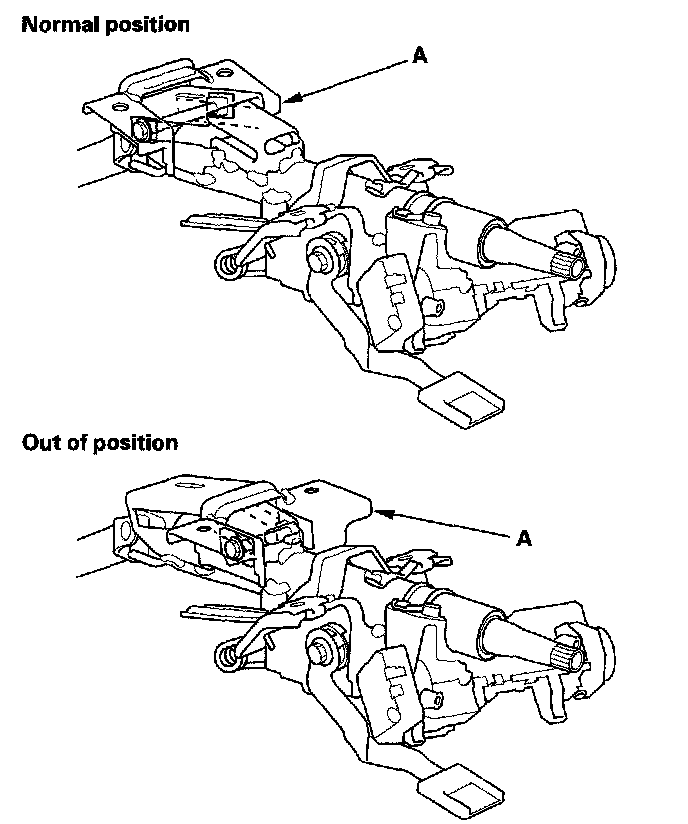
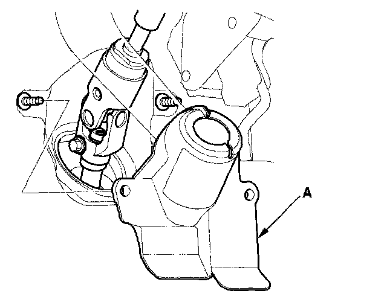
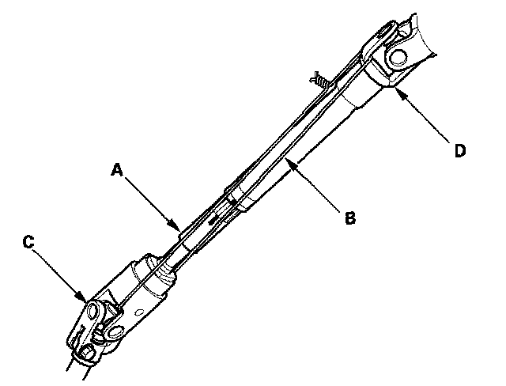
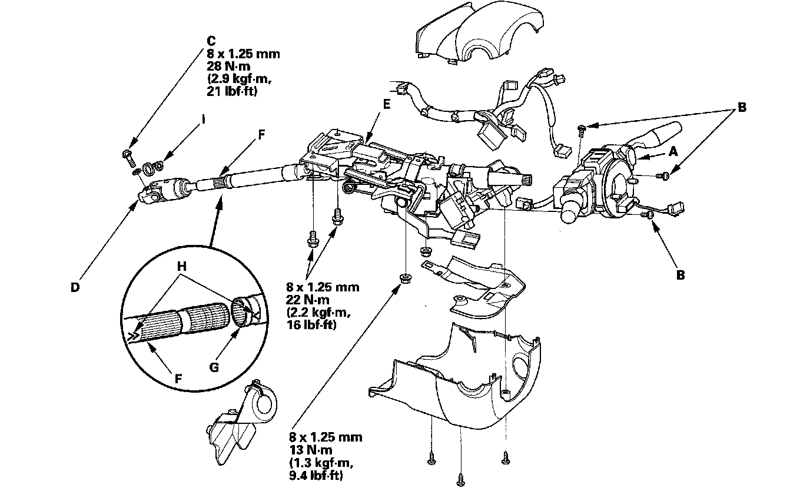
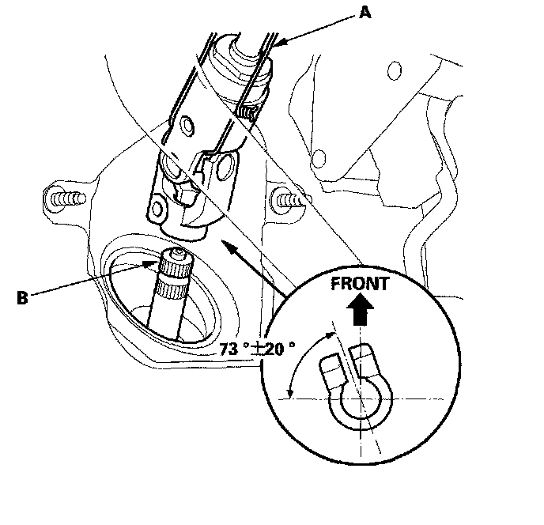
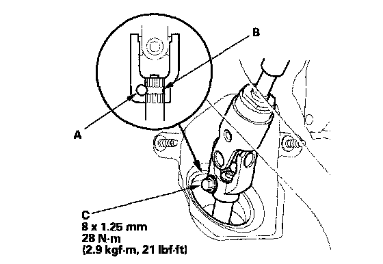
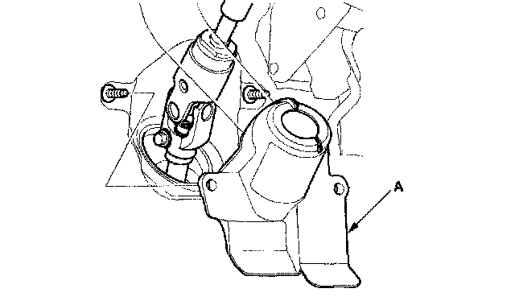

Steering Column Removal and Installation
Steering Column Removal and InstallationSRS components are located in this area. Review the SRS component locations and the precautions and procedures before doing repairs or service.
Removal
NOTICE: Be careful not to pull the bracket (A) on the front side of steering column out of its normal position. If the bracket accidentally comes out, replace the steering column as an assembly.

1. Make sure you have the anti-theft code for the audio or navigation system, then write down the audio presets.
2. Make sure the ignition switch is OFF, then disconnect the negative cable from the battery.
3. Remove the driver's airbag assembly and the steering wheel.
4. Remove the driver's dashboard undercover.
5. Remove the column covers.
6. Remove the steering joint cover (A).

7. Release the lock lever, and adjust the steering column to full tilt up position, and to the full telescopic in position.
8. Tighten the lock lever.
9. Hold the lower slide shaft (A) on the column with a piece of wire (B) between the joint yoke (C) of the lower slide shaft and joint yoke (D) of the upper shaft to prevent the slider shaft from pulling out.

10. Release the lock lever, and adjust the steering column to the full telescopic out position, then tighten the lock lever.
NOTE: Do not release lock lever when removing the steering column from the frame.
11. Disconnect the wire harness connectors from the combination switch assembly and cable reel (A).

12. Remove the combination switch assembly from the steering column shaft by removing the three screws (B).
13. Disconnect the connectors from the ignition switch, and release the wire harness clips from the steering column.
14. Remove the steering joint bolt (C), then disconnect the steering joint (D) from the pinion shaft.
15. Remove the steering column (E) by removing the attaching nuts and bolts. If the lower slide shaft (F) is removed, slip it into the upper shaft (G) by aligning the paint or stamped marks (H).
16. Remove the center guide (I) (if equipped), and discard it. The center guide is for factory assembly only.
Installation
1. Install the steering column in the reverse order of removal, and note these items:
^ Make sure the wires are not caught or pinched by any parts.
^ Take care not to let the sliding capsules fall out of position during column installation.
2. Center the steering rack within its stroke in steering joint connection.
3. With the rack in the straight ahead driving position, cut the wire (A) and slip the lower end of the steering joint onto the pinion shaft (B) in the range shown.

4. Align the bolt hole (A) on the steering joint with the groove (B) around the pinion shaft, and loosely install the joint bolt (C). Be sure that the joint bolt is securely in the groove in the pinion shaft. Pull on the steering joint to make sure that the steering joint is fully seated. Tighten the steering joint bolt to the specified torque.

5. Install the steering joint cover (A).

6. Install the steering wheel.
7. Install the column covers.
8. Install the driver's dashboard undercover.
9. Reconnect the negative cable to the battery and do these items:
^ Turn the ignition switch ON (II); the SRS indicator should come on for about 6 seconds and then go off.
^ Enter the anti-theft code for the audio or navigation system, then enter the audio presets.
^ Set the clock.
^ Make sure the horn and turn signal switch work properly.
^ Make sure the steering wheel switches work properly.
^ Make sure the steering wheel is centered.